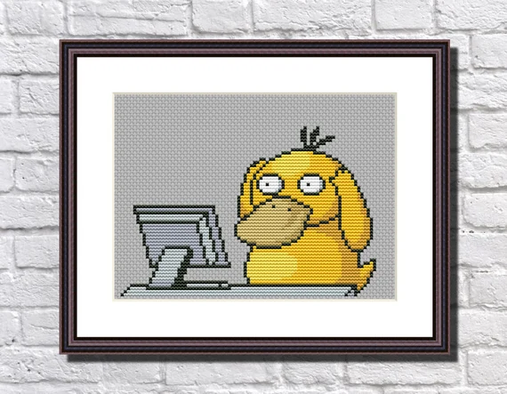

Для кого розроблена програма
-

Школярі та випускники (15-18 років)
отримають першу професію, не відкладаючи на потім свою мрію стати програмістом.
-
Студенти ВНЗ (18-23 роки)
освоять другу спеціальність паралельно з університетською освітою.
-
Представники інших професій (23-55 років)
яких не влаштовує поточна кар'єрна і фінансова перспектива, зможуть перевчитися на розробника ПЗ і отримати затребувану професію.
-
Всі бажаючі підвищити ІТ-кваліфікацію
систематизують свої знання і отримають робочі навички, затребувані сучасному ІТ.
Як проходить навчання
Партнери Академії
Luxoft
Luxoft - глобальна технологічна компанія, одна із лідерів на ринку. послуг цифрової трансформації та створення програмних продуктів Luxoft пропонує індивідуальні ІТ-рішення, які заохочують до змін у бізнесах клієнтів в усьому світі.
Luxoft об'єднує понад 13.000 спеціалістів із 22 країн світу зі штаб- квартирою у м. Цуг, Швейцарія. Україна є однією з найпотужніших локацій в географії Luxoft. Близько 3500 фахівців усіх ключових напрямків зосереджені в офісах Києва, Одеси і Дніпра.